Daily game
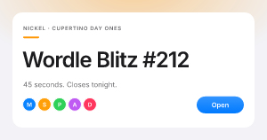


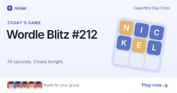
Three researched directions, one applied system. Social Club pairs collectible, people-first link previews with calm native web pages. These images are local fixtures, not real league data.
Card previews below are the actual 300px-wide resvg PNGs, displayed at no more than their native width. Open “Full PNG” to inspect the 1200 × 630 or 1080 × 1080 source.
All seven chat card types, plus winner, ordinary player, and last-place portraits.


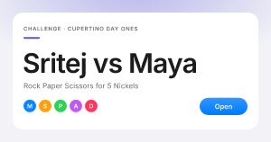
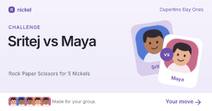
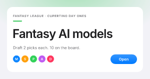
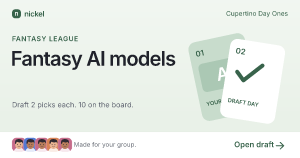
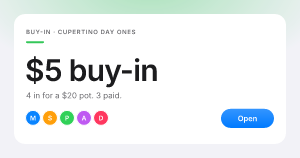
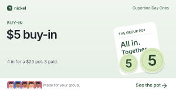
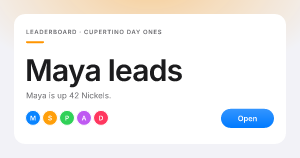
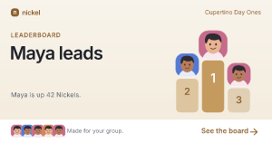
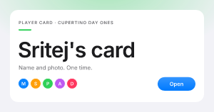
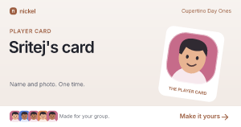
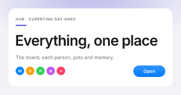
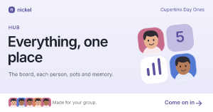
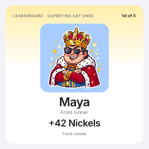
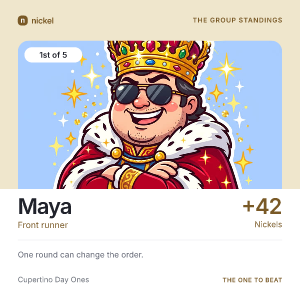
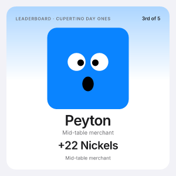
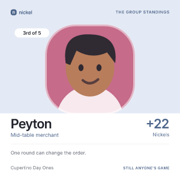
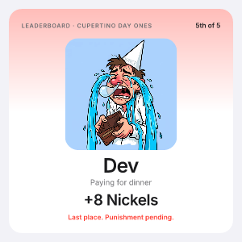
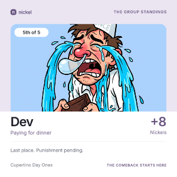
Each pair uses identical fixture data and the same Chromium mobile viewport. Left is before, right is after. Both themes were forced, not inferred from the screenshot.
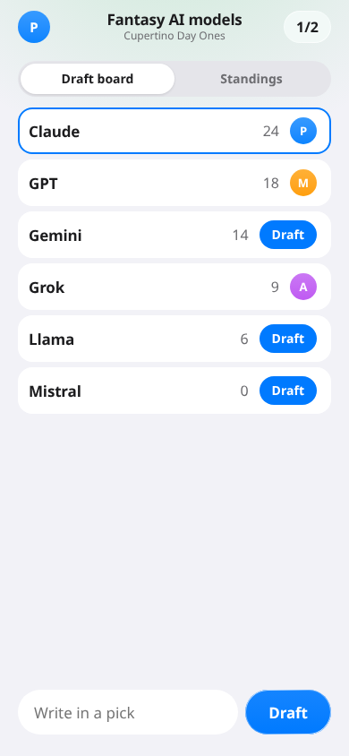
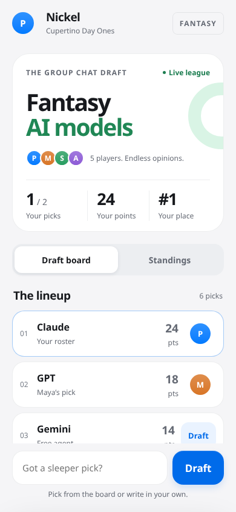
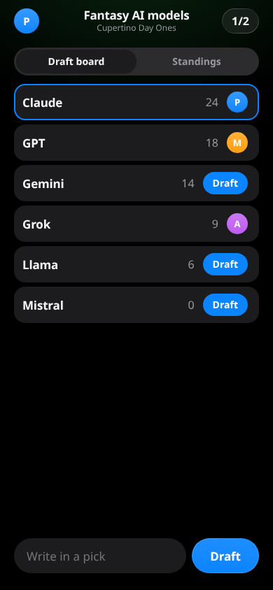
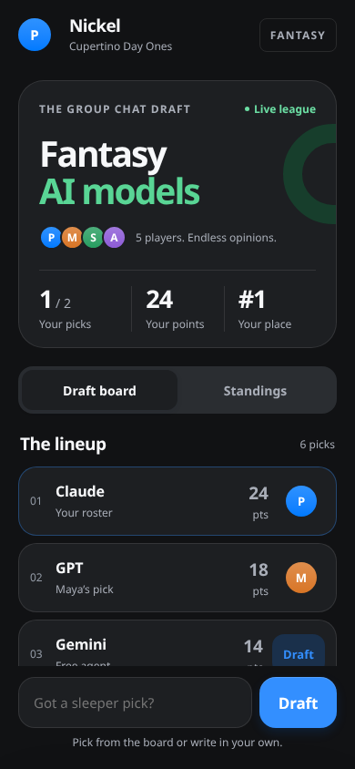
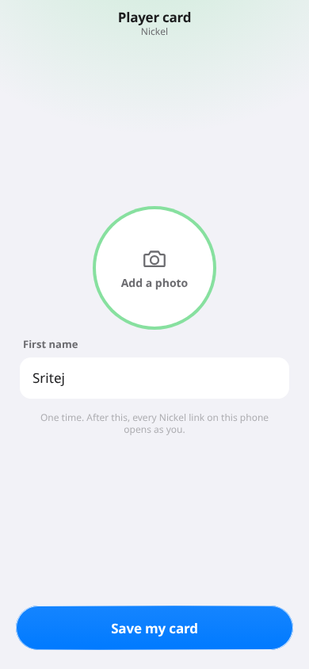
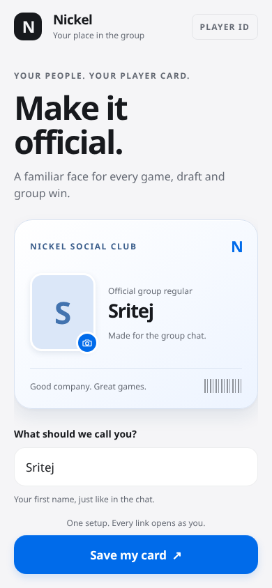
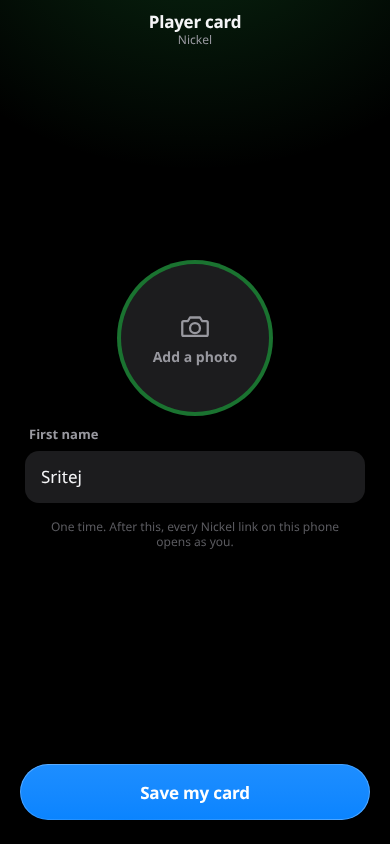
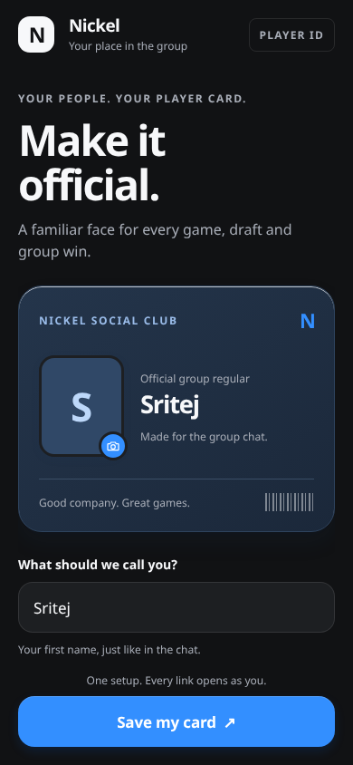

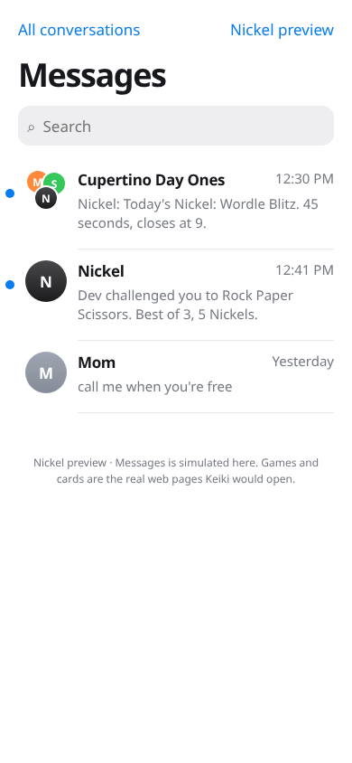
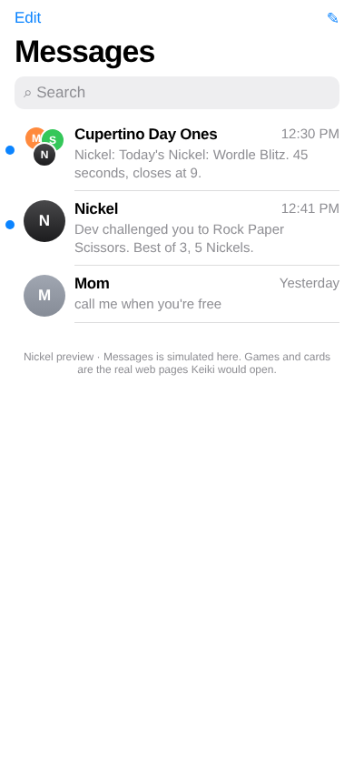
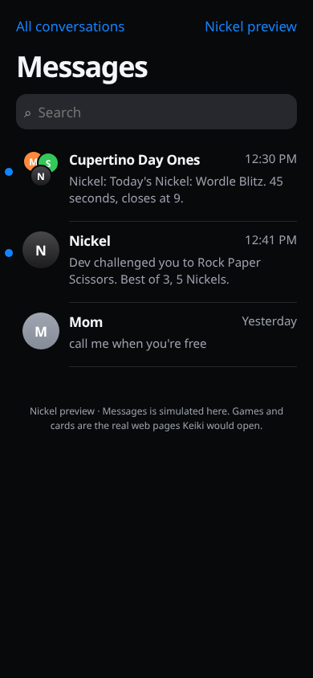

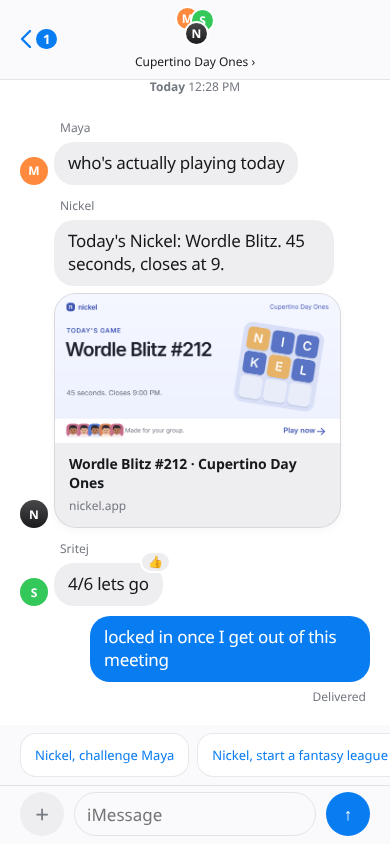
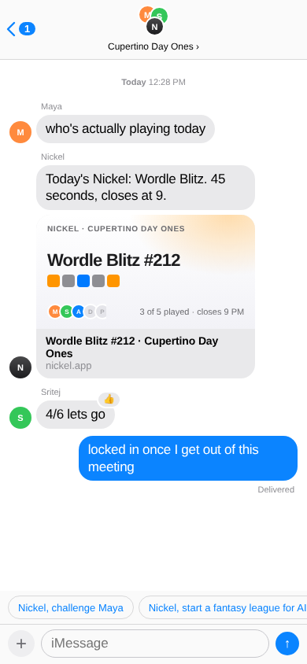
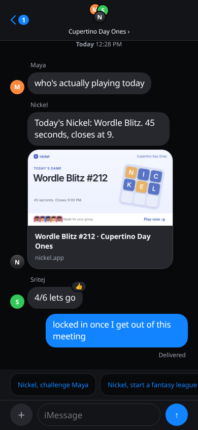
The after folder also contains the draft score sheet, empty and disconnected draft, profile saving, saved and error states, locked profile, Messages loading and unavailable preview, reduced-motion, and moodboard captures. See the exact verification record.